Research Areas
The main focus of our research is in network information and signal processing. Our work lies at the intersection of signal processing, information theory and machine learning. We develop inference, estimation and learning algorithms for multi-agent networks like sensor networks and social networks, through the use of mathematical, statistical, and information-theoretic techniques. Of particular interest are tractable stochastic models that provide us with useful insights into the management, operation and performance of such networks. Where applicable, we develop simple, scalable and easy to implement distributed algorithms to facilitate inference, estimation or other objectives.
We thank our following sponsors.


Information and Signal Processing
- Generalized graph signal processing. We develop a broad framework that not only encompasses traditional GSP as a special case, but also includes a hybrid framework of graph and classical signal processing over a continuous domain. Our framework generalizes traditional GSP to graph signals in a separable Hilbert space with infinite dimensions. We also develop the concept of GSP on subgraphs.
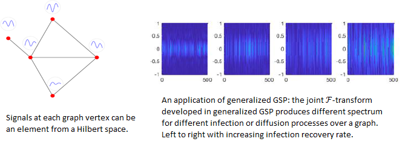
- Folded graph signal recovery. The signals observed in many applications can be modeled as graph signals. Examples include photographs, CMOS sensor images, and readings from sensor networks. Self-reset analog-to-digital converters (ADCs) are used to sample high dynamic range signals resulting in modulo-operation based folded signal samples. In this work, we develop a theory to characterize when a folded graph signal can be recovered and propose algorithms to achieve this.
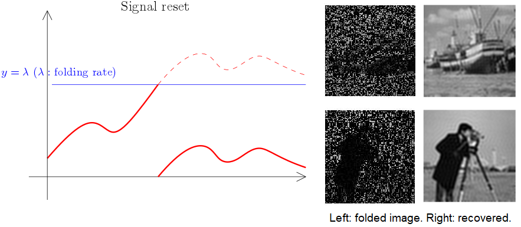 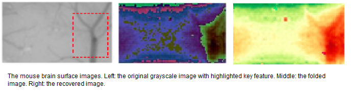
- Signal processing over a high order graph structures. For signals on a point cloud, we want to develop signal processing framework without knowing explicit connections between points; and instead, only prior knowledge of the distribution of all possible connections is required. We also aim to develop advanced geometric signal processing framework in dealing with signals living on more complicated geometric objects (than graphs) such as simplicial complexes, manifolds, etc. Applications of these new frameworks include anomaly detection, denoising, new graph neural network architecture, etc.
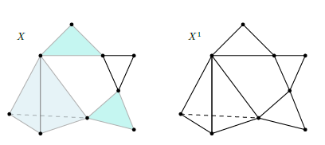
- Graph neural networks (GNNs). Convolution neural networks (CNNs) have been used extensively in a large array of applications with notable success in image processing. There are attempts to extend the CNN architecture to general graphs. In this work, we develop various graph neural network approaches that mimic or subsume traditional CNN methods. We have studied robustness properties of graph neural diffusion and developed GNNs inspired by physics concepts like Hamiltonian flows.

- Error-correcting neural network. Though deep learning has been applied successfully in many scenarios, malicious inputs with human-imperceptible perturbations can make it vulnerable in real applications. We propose an error-correcting neural network (ECNN) that combines a set of binary classifiers to combat adversarial attacks and perturbations. To build an ECNN, we propose to design a code matrix so that the minimum Hamming distance between any two rows (i.e., two codewords) and the minimum shared information distance between any two columns (i.e., two partitions of class labels) are simultaneously maximized. Maximizing row distances can increase the system fault tolerance while maximizing column distances helps increase the diversity between binary classifiers. ECNN is effective against the state-of-the-art white-box and black-box attacks on several datasets while maintaining good classification accuracy on normal examples. It achieves significant improvements over other SOTA ensemble approaches.
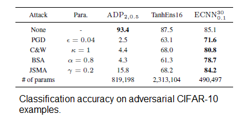
Selected Publications
| Y. Song, Q. Kang, S. Wang, K. Zhao, and W. P. Tay, “On the robustness of graph neural diffusion to topology perturbations,” Advances in Neural Information Processing Systems (NeurIPS), New Orleans, USA, Nov. 2022. [pdf] [arXiv] [Bib] |
@INPROCEEDINGS{SonKanWan:C22,
author = {Yang Song and Qiyu Kang and Sijie Wang and Kai Zhao and Wee Peng Tay},
title = {On the Robustness of Graph Neural Diffusion to Topology Perturbations},
booktitle = {Advances in Neural Information Processing Systems (NeurIPS)},
month = {Nov.},
year = {2022},
address = {New Orleans, USA},
}
|
| X. Jian and W. P. Tay, “Wide-sense stationarity in generalized graph signal processing,” IEEE Transactions on Signal Processing, no. 70, pp. 3414 – 3428, 2022. [pdf] [arXiv] [Bib] |
@ARTICLE{JiaTay:J22,
author = {Xingchao Jian and Wee Peng Tay},
title = {Wide-Sense Stationarity in Generalized Graph Signal Processing},
journal = {IEEE Trans. Signal Process.},
number = {70},
pages = {3414 -- 3428},
year = {2022},
}
|
| F. Ji, Pratibha, and W. P. Tay, “Unlimited dynamic range signal recovery for folded graph signals,” Signal Processing, vol. 198, p. 108574, 2022. [pdf] [arXiv] [Bib] |
@ARTICLE{JiPraTay:J22,
author = {Feng Ji and Pratibha and Wee Peng Tay},
title = {Unlimited dynamic range signal recovery for folded graph signals},
journal = {Signal Processing},
volume = {198},
pages = {108574},
year = {2022},
}
|
| S. H. Lee, F. Ji, and W. P. Tay, “SGAT: Simplicial graph attention network,” Proc. International Joint Conference on Artificial Intelligence (IJCAI), Vienna, Austria, Jul. 2022. [pdf] [arXiv] [Bib] |
@INPROCEEDINGS{LeeJiTay:C22,
author = {See Hian Lee and Feng Ji and Wee Peng Tay},
title = {{SGAT}: Simplicial Graph Attention Network},
booktitle = {Proc. International Joint Conference on Artificial Intelligence (IJCAI)},
month = {Jul.},
year = {2022},
address = {Vienna, Austria},
}
|
| Q. Kang, Y. Song, Q. Ding, and W. P. Tay, “Stable neural ODE with Lyapunov-stable equilibrium points for defending against adversarial attacks,” Advances in Neural Information Processing Systems (NeurIPS), virtual, Dec. 2021. [pdf] [arXiv] [Bib] |
@INPROCEEDINGS{KanSonDinTay:C21,
author = {Qiyu Kang and Yang Song and Qinxu Ding and Wee Peng Tay},
title = {Stable Neural {ODE} with {Lyapunov}-Stable Equilibrium Points for Defending Against Adversarial Attacks},
booktitle = {Advances in Neural Information Processing Systems (NeurIPS)},
month = {Dec.},
year = {2021},
address = {virtual},
}
|
| Y. Song, Q. Kang, and W. P. Tay, “Error-correcting output codes with ensemble diversity for robust learning in neural networks,” Proc. AAAI Conference on Artificial Intelligence, virtual, Feb. 2021. [pdf] [arXiv] [Bib] |
@INPROCEEDINGS{SonKanTay:C21,
author = {Yang Song and Qiyu Kang and Wee Peng Tay},
title = {Error-Correcting Output Codes with Ensemble Diversity for Robust Learning in Neural Networks},
booktitle = {Proc. AAAI Conference on Artificial Intelligence},
month = {Feb.},
year = {2021},
address = {virtual},
}
|
| S. H. Lee, F. Ji, and W. P. Tay, “Learning on heterogeneous graphs using high-order relations,” in Proc. IEEE Int. Conf. Acoustics, Speech, and Signal Processing, Toronto, Canada, Jun. 2021. [arXiv] |
| F. Ji, J. Yang, Q. Zhang, and W. P. Tay, “GFCN : A new graph convolutional network based on parallel flows,” in Proc. IEEE Int. Conf. Acoustics, Speech, and Signal Processing, Barcelona, Spain, May 2020. [arXiv] |
| F. Ji and W. P. Tay, "A Hilbert space theory of generalized graph signal processing," IEEE Transactions on Signal Processing, vol. 67, no. 24, pp. 6188 – 6203, Dec. 2019. [pdf] [Bib] [Keynote GlobalSIP 2019] |
@ARTICLE{JiTay:J19,
author = {Feng Ji and Wee Peng Tay},
title = {A {Hilbert} Space Theory of Generalized Graph Signal Processing},
journal = {{IEEE} Trans. Signal Process.},
volume = {67},
number = {24},
pages = {6188 -- 6203},
month = {Dec.},
year = {2019},
}
|
| F. Ji, W. Tang, and W. P. Tay, "On the properties of Gromov matrices and their applications in network inference," IEEE Transactions on Signal Processing, vol. 67, no. 10, pp. 2624 – 2638, May 2019. [pdf] [Bib] |
@ARTICLE{JiTanTay:J19,
author = {Feng Ji and Wenchang Tang and Wee Peng Tay},
title = {On the Properties of {Gromov} Matrices and Their Applications in Network Inference},
journal = {{IEEE} Trans. Signal Process.},
volume = {67},
number = {10},
pages = {2624 -- 2638},
month = {May},
year = {2019},
}
|
Inference and Statistical Privacy for Networks
With the ubiquitous adoption of Internet of Things (IoT) devices like on-body sensors, smart home appliances, and smart phones, massive amounts of data about users’ habits, routines and preferences are being collected by service providers. While such data are utilized by service providers to improve the quality of life, e.g., by making building heating and ventilation systems more intelligent and adaptive, the same data can also be exploited to learn users’ private behaviors, habits and lifestyle choices. For consumers to widely adopt IoT systems, privacy protection mechanisms are a necessary feature of future IoT products. An example is the deployment of home-monitoring video cameras in old folks' homes for fall detection. If the cameras transmit the raw video feed to a fusion center, the fusion center can not only use these video feeds for fall detection, but also has the potential to intrude on the privacy of the home inhabitants. The camera sensors therefore need to perform intelligent observation summary with a suitable privacy mapping in order to limit the amount and quality of information they send to the fusion center.


Selected Publications
| C. Wang, W. P. Tay, Y. Wei, and Y. Wang, “Privacy-preserving distributed projection LMS for linear multitask networks,” IEEE Transactions on Signal Processing, vol. 69, pp. 6530 – 6545, 2021. [pdf] [arXiv] [Bib] |
@ARTICLE{WanTayWei:J21,
author = {Chengcheng Wang and Wee Peng Tay and Ye Wei and Yuan Wang},
title = {Privacy-Preserving Distributed Projection LMS for Linear Multitask Networks},
journal = {IEEE Trans. Signal Process.},
volume = {69},
pages = {6530 -- 6545},
year = {2021},
}
|
| C. X. Wang, Y. Song, and W. P. Tay, "Arbitrarily strong utility-privacy tradeoff in multi-agent systems," IEEE Transactions on Information Forensics and Security, vol. 16, pp. 671 – 684, 2021. [pdf] [arXiv] [Bib] |
@ARTICLE{WanSonTay:J21,
author = {Chong Xiao Wang and Yang Song and Wee Peng Tay},
title = {Arbitrarily Strong Utility-Privacy Tradeoff in Multi-Agent Systems},
journal = {{IEEE} Trans. Inf. Forensics Security},
volume = {16},
number = {},
pages = {671 -- 684},
month = {},
year = {2021},
}
|
| Y. Song, C. X. Wang, and W. P. Tay, "Compressive privacy for a linear dynamical system," IEEE Transactions on Information Forensics and Security, vol. 15, pp. 895 – 910, 2020. [pdf] [arXiv] [Bib] |
@ARTICLE{SonWanTay:J20,
author = {Yang Song and Chong Xiao Wang and Wee Peng Tay},
title = {Compressive Privacy for a Linear Dynamical System},
journal = {{IEEE} Trans. Inf. Forensics Security},
volume = {15},
number = {},
pages = {895 -- 910},
month = {},
year = {2020},
}
|
| M. Sun and W. P. Tay, “On the relationship between inference and data privacy in decentralized IoT networks,” IEEE Transactions on Information Forensics and Security, vol. 15, pp. 852 – 866, 2020, in press. [pdf] [Bib] |
@ARTICLE{SunTay:J20b,
author = {Meng Sun and Wee Peng Tay},
title = {On the Relationship Between Inference and Data Privacy in Decentralized IoT Networks},
journal = {{IEEE} Trans. Inf. Forensics Security},
volume = {15},
number = {},
pages = {852 -- 866},
month = {},
year = {2020},
note = {in press},
}
|
| M. Sun and W. P. Tay, “Decentralized detection with robust information privacy protection,” IEEE Transactions on Information Forensics and Security, vol. 15, pp. 85 – 99, 2020, in press. [pdf] [Bib] |
@ARTICLE{SunTay:J20a,
author = {Meng Sun and Wee Peng Tay},
title = {Decentralized Detection with Robust Information Privacy Protection},
journal = {{IEEE} Trans. Inf. Forensics Security},
volume = {15},
number = {},
pages = {85-99},
month = {},
year = {2020},
note = {in press},
}
|
| X. He, W. P. Tay, H. Lei, M. Sun, and Y. Gong, "Privacy-aware sensor network via multilayer nonlinear processing," IEEE Internet of Things Journal, vol. 6, no. 6, pp. 10834 – 10845, Dec. 2019. [pdf] [Bib] |
@ARTICLE{HeTayHua:J19,
author = {Xin He and Wee Peng Tay and Huang Lei and Meng Sun and Yi Gong},
title = {Privacy-Aware Sensor Network Via Multilayer Nonlinear Processing},
journal = {{IEEE} Internet Things J.},
volume = {6},
number = {6},
pages = {10834 -- 10845},
month = {Dec.},
year = {2019},
}
|
| M. Sun, W. P. Tay, and X. He, "Toward information privacy for the Internet of Things: A non-parametric learning approach," IEEE Transactions on Signal Processing, vol. 66, no. 7, pp. 1734 - 1747, Apr. 2018. [pdf] [Bib] |
@ARTICLE{SunTayHe:J18,
author = {Meng Sun and Wee Peng Tay and Xin He},
title = {Toward Information Privacy for the {Internet of Things}: A Non-parametric Learning Approach},
journal = {{IEEE} Trans. Signal Process.},
volume = {66},
number = {7},
pages = {1734 -- 1747},
month = {Apr.},
year = {2018},
}
|
Distributed Inference and Learning
- In distributed inference over a network, each agent makes an observation and sends a summary of its observation to a fusion center or another agent. The goal of the network is to cooperatively make a decision from a given set of hypotheses, based on the agent messages. Various important applications in environment monitoring, intrusion detection, cognitive radio systems, social networks, and big data analytics can be formulated as distributed inference problems or have subroutines that involve distributed learning. In this work, we develop inference methods to achieve asymptotically optimal performance, to optimize the trade-off between inference performance and energy consumption, and to achieve implementations on low-cost embedded platforms.
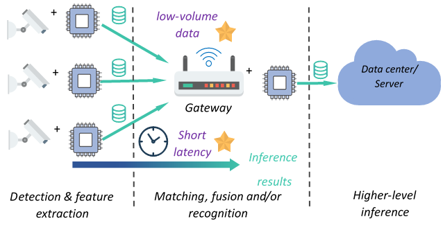
- Social learning is the use of social networks (including online networks like Facebook and Twitter, and physical networks formed using an ad hoc mesh of smart phones) to perform event detection and inference. We develop a mathematical framework for robust learning in social networks, study the fundamental learning accuracy achievable in such networks, and propose methods for efficient robust social learning in the presence of misinformation and malicious agents. We aim to bridge the gaps in our current understanding of how learning or inference is impacted by misinformation or malicious agents in a social network. On the other hand, in a crowdsourcing platform, workers’ responses to questions posed by a crowdsourcer are used to determine the hidden state of a multi-class labeling problem. As workers may be unreliable, we propose to perform sequential questioning in which the questions posed to the workers are designed based on previous questions and answers.
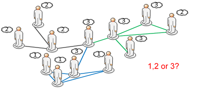
Selected Publications
| G. Yang, W. P. Tay, Y. L. Guan, and Y.-C.Liang, "Optimal power allocation for diffusion-type sensor networks with wireless information and power transfer," IEEE Access, vol. 7, pp. 32408–32422, Mar. 2019. [pdf] [Bib] |
@ARTICLE{YanTayGua:J19,
author = {Gang Yang and Wee Peng Tay and Yong Liang Guan and Ying-Chang Liang},
title = {Optimal Power Allocation for Diffusion-Type Sensor Networks With Wireless Information and Power Transfer},
journal = {IEEE Access},
volume = {7},
number = {},
pages = {32408 -- 32422},
month = {Mar.},
year = {2019},
}
|
| Y. Wang, W. P. Tay, and W. Hu, "A multitask diffusion strategy with optimized inter-cluster cooperation," IEEE Journal of Selected Topics in Signal Processing, vol. 11, no. 3, pp. 504 – 517, Mar. 2017. [pdf] [Bib] |
@ARTICLE{WanTayHu:J17,
author = {Yuan Wang and Wee Peng Tay and Wuhua Hu},
title = {A Multitask Diffusion Strategy with Optimized Inter-Cluster Cooperation},
journal = {{IEEE} J. Sel. Topics Signal Process.},
volume = {11},
number = {3},
pages = {504 - 517},
month = {Mar.},
year = {2017},
}
|
| J. Ho, W. P. Tay, T. Q. S. Quek, and E. K. P. Chong, "Robust decentralized detection and social learning in tandem networks," IEEE Transactions on Signal Processing, vol. 63, no. 19, pp. 5019–5032, Oct. 2015, IEEE Signal Processing Society Young Author Best Paper Award [pdf] [Bib] |
@ARTICLE{HoTayQue:J15,
author = {Jack Ho and Wee Peng Tay and Tony Q. S. Quek and Edwin K. P. Chong},
title = {Robust decentralized detection and social learning in tandem networks},
journal = {{IEEE} Trans. Signal Process.},
volume = {63},
number = {19},
pages = {5019 -- 5032},
month = {Oct.},
year = {2015},
}
|
| W. Hu and W. P. Tay, "Multi-hop diffusion LMS for energy-constrained distributed estimation," IEEE Transactions on Signal Processing, vol. 63, no. 15, pp. 4022 – 4036, Aug. 2015. [pdf] [Bib] |
@ARTICLE{XuQuiLen:J15,
author = {Wuhua Hu and Wee Peng Tay},
title = {Multi-hop diffusion {LMS} for energy-constrained distributed estimation},
journal = {{IEEE} Trans. Signal Process.},
volume = {63},
number = {15},
pages = {4022 –- 4036},
month = {Aug.},
year = {2015},
}
|
| W. P. Tay, "Whose opinion to follow in multihypothesis social learning? A large deviations perspective," IEEE Journal of Selected Topics in Signal Processing, vol. 9, no. 2, pp. 344–359, Mar. 2015. [pdf] [Bib] |
@ARTICLE{Tay:J15,
author = {Wee Peng Tay},
title = {Whose Opinion to follow in Multihypothesis Social Learning? {A} Large Deviations Perspective},
journal = {{IEEE} J. Sel. Topics Signal Process.},
year = {2015},
month = {Mar.},
volume = {9},
number = {2},
pages = {344 -- 359},
}
|
| M. Leng, W. P. Tay, T. Q. S. Quek, and H. Shin, "Distributed local linear parameter estimation using Gaussian SPAWN," IEEE Transactions on Signal Processing, vol. 63, no. 1, pp. 244–257, Jan. 2015. [pdf] [Bib] |
@ARTICLE{LenTayQue:J15,
author = {Mei Leng and Wee Peng Tay and T. Q. S. Quek and H. Shin},
title = {Distributed local linear parameter estimation using {Gaussian SPAWN}},
journal = {{IEEE} Trans. Signal Process.},
volume = {63},
number = {1},
pages = {244 -- 257},
month = {Jan.},
year = {2015},
}
|
| Y. Zhang, W. P. Tay, K. H. Li, and D. Gaiti, “Distributed boundary estimation for spectrum sensing in cognitive radio networks,” IEEE Journal on Selected Areas in Communications, vol. 32, no. 11, pp. 1961–1973, Nov. 2014. [pdf] [Bib] |
@ARTICLE{ZhaTayLi:J14,
author = {Yi Zhang and Wee Peng Tay and Kwok Hung Li and Dominique Gaiti},
title = {Distributed Boundary Estimation for Spectrum Sensing in Cognitive Radio Networks},
journal = {{IEEE} J. Sel. Areas Commun.},
volume = {32},
number = {11},
pages = {1961 -– 1973},
month = {Nov.},
year = {2014},
}
|
| W. P. Tay, “The value of feedback in decentralized detection,” IEEE Transactions on Information Theory, vol. 58 , no. 12, pp. 7226–7239, Dec. 2012. [pdf] [Bib] |
@ARTICLE{Tay:J12,
author = {Wee Peng Tay},
title = {The value of feedback in decentralized detection},
journal = {{IEEE} Trans. Inf. Theory},
volume = {58},
number = {12},
pages = {7226 -- 7239},
month = {Dec.},
year = {2012},
}
|
| W. P. Tay, J. N. Tsitsiklis, and M. Z. Win, “Bayesian detection in bounded height tree networks,” IEEE Transactions on Signal Processing, vol. 57, no.10, pp. 4042–4051, Oct. 2009. [pdf] [Bib] |
@ARTICLE{TayTsiWin:J09a,
author = {Wee Peng Tay and John N. Tsitsiklis and Moe Z. Win},
title = {Bayesian Detection in Bounded Height Tree Networks},
journal = {{IEEE} Trans. Signal Process.},
volume = {57},
number = {10},
pages = {4042 -- 4051},
month = {Oct.},
year = {2009},
}
|
| W. P. Tay, J. N. Tsitsiklis, and M. Z. Win, “On the subexponential decay of detection error probabilities in long tandems,” IEEE Transactions on Information Theory, vol. 54, no. 10, pp. 4767–4771, Oct. 2008. [pdf] [Bib] |
@ARTICLE{TayTsiWin:J08c,
author = {Wee Peng Tay and John N. Tsitsiklis and Moe Z. Win},
title = {On the Subexponential Decay of Detection Error Probabilities in Long Tandems},
journal = {{IEEE} Trans. Inf. Theory},
volume = {54},
number = {10},
pages = {4767 -- 4771},
month = {Oct.},
year = {2008},
}
|
| W. P. Tay, J. N. Tsitsiklis, and M. Z. Win, “Data fusion trees for detection: does architecture matter?” IEEE Transactions on Information Theory, vol. 54, no. 9, pp. 4155–4168, Sep. 2008. [pdf] [Bib] |
@ARTICLE{TayTsiWin:J08b,
author = {Wee Peng Tay and John N. Tsitsiklis and Moe Z. Win},
title = {Data Fusion Trees for Detection: Does Architecture Matter?},
journal = {{IEEE} Trans. Inf. Theory},
volume = {54},
number = {9},
pages = {4155 -- 4168},
month = {Sep.},
year = {2008},
}
|
| W. P. Tay, J. N. Tsitsiklis, and M. Z. Win, “On the impact of sensor failures and unreliable communications in dense sensor networks,” IEEE Transactions on Signal Processing, vol. 56, no. 6, pp. 2535–2546, Jun. 2008. [pdf] [Bib] |
@ARTICLE{TayTsiWin:J08a,
author = {Wee Peng Tay and John N. Tsitsiklis and Moe Z. Win},
title = {On the Impact of Node Failures and Unreliable Communications in Dense Sensor Networks},
journal = {{IEEE} Trans. Signal Process.},
volume = {56},
number = {6},
pages = {2535 -- 2546},
month = {Jun.},
year = {2008},
}
|
| W. P. Tay, J.N. Tsitsiklis, and M.Z. Win, “Asymptotic performance of a censoring sensor network,” IEEE Transactions on Information Theory, vol. 53, no. 11, pp. 4191–4209, Nov 2007. [pdf] [Bib] |
@ARTICLE{TayTsiWin:J07a,
title = {Asymptotic Performance of a Censoring Sensor Network},
author = {Tay, W. P. and Tsitsiklis, J. N. and Win, M. Z.},
journal = {{IEEE} Trans. Inf. Theory},
volume = {53},
number = {11},
pages = {4191 -- 4209},
month = {Nov.},
year = {2007},
}
|
Detection, Estimation and Optimization
- Quickest change detection (QCD) is a fundamental problem in statistics. Given a sequence of observations that have a certain distribution up to an unknown change point, and have a different distribution after that, the goal is to detect this change in distribution as quickly as possible subject to false alarm constraints. The QCD problem has found many practical applications including in power system outage detection, network surveillance, fraud detection, structural health monitoring, spectrum reuse, etc. In this work, we develop theories and algorithms for the QCD problem under the assumption that the prechange distribution is known, and the post-change distribution is only known to belong to a family of distributions distinguishable from a discretized version of the pre-change distribution. We also consider the case where both nuisance and critical changes may occur, the objective is to detect the critical change as quickly as possible without raising an alarm when either there is no change or a nuisance change has occurred.
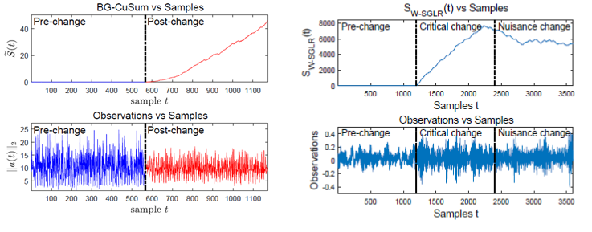
- In a crowdsourcing platform, workers’ responses to questions posed by a crowdsourcer are used to determine the hidden state of a multi-class labeling problem. As workers may be unreliable, we propose to perform sequential questioning in which the questions posed to the workers are designed based on previous questions and answers using a strategy based on the Ulam-Rényi game. We develop a task recommendation scheme that assigns tasks more likely to be accepted by a worker who is more likely to complete it reliably, thus resulting in better performance for the task requester. This is based on a novel variant of the multi-armed bandit problem.
- We develop optimization methods for various problems in sensor networks, including blind calibration of a sensor network, where the sensor gains and offsets are estimated from noisy observations of unknown signals, and inferring of network topology from information cascades.
Selected Publications
| Q. Kang and W. P. Tay, "Task recommendation in crowdsourcing based on learning preferences and reliabilities," IEEE Transactions on Services Computing, in press. [pdf] [Bib] |
@ARTICLE{KanTay:J21,
author = {Qiyu Kang and Wee Peng Tay},
title = {Task Recommendation in Crowdsourcing Based on Learning Preferences and Reliabilities},
journal = {IEEE Trans. Services Computing},
volume = {},
number = {},
pages = {},
month = {},
year = {2021},
note = {in press},
}
|
| T. S. Lau and W. P. Tay, "Quickest change detection in the presence of a nuisance change," IEEE Transactions on Signal Processing, vol. 67, no. 20, pp. 5281 – 5296, Oct. 2019. [pdf] [Bib] |
@ARTICLE{LauTay:J19,
author = {Tze Siong Lau and Wee Peng Tay},
title = {Quickest Change Detection in the Presence of a Nuisance Change},
journal = {{IEEE} Trans. Signal Process.},
volume = {67},
number = {20},
pages = {5281 -- 5296},
month = {Oct.},
year = {2019},
}
|
| T. S. Lau, W. P. Tay, and V. V. Veeravalli, "A binning approach to quickest change detection with unknown post-change distribution," IEEE Transactions on Signal Processing, vol. 67, no. 3, pp. 609 – 621, Feb. 2019. [pdf] [Bib] |
@ARTICLE{LauTayVee:J18,
author = {Tze Siong Lau and Wee Peng Tay and Venugopal V. Veeravalli},
title = {A Binning Approach to Quickest Change Detection with Unknown Post-Change Distribution},
journal = {{IEEE} Trans. Signal Process.},
volume = {67},
number = {3},
pages = {609 -- 621},
month = {Feb.},
year = {2019},
}
|
| X. Liu, W. P. Tay, Z.-W. Liu, and G. Xiao, "Quasi-synchronization of heterogeneous networks with a generalized Markovian topology and event-triggered communication," IEEE Transactions on Cybernetics, vol. 50, no. 10, pp. 4200 – 4213, Oct. 2020. [pdf] [Bib] |
@ARTICLE{LiuTayLiu:J20,
author = {Xinghua Liu and Wee Peng Tay and Zhi-Wei Liu and Gaoxi Xiao},
title = {Quasi-synchronization of heterogeneous networks with a generalized {Markovian} topology and event-triggered communication},
journal = {{IEEE} Trans. Cybern.},
volume = {50},
number = {10},
pages = {4200 -- 4213},
month = {Oct.},
year = {2020},
}
|
| F. Ji, W. Tang, W. P. Tay, and E. K. P. Chong, "Network topology inference using information cascades with limited statistical knowledge," Information and Inference: A Journal of the IMA, vol. 9, no. 2, pp. 327 – 360, Jun. 2020. [pdf] [Bib] |
@ARTICLE{JiTanTayCho:J20,
author = {Feng Ji and Wenchang Tang and Wee Peng Tay and Edwin K. P. Chong},
title = {Network Topology Inference Using Information Cascades with Limited Statistical Knowledge},
journal = {Information and Inference: A Journal of the {IMA}},
volume = {9},
number = {2},
pages = {327 -– 360},
month = {Jun.},
year = {2020},
}
|
| Q. Kang and W. P. Tay, "Sequential multi-class labeling in crowdsourcing," IEEE Transactions on Knowledge and Data Engineering, vol. 31, no. 11, pp. 2190 – 2199, Nov. 2019. [pdf] [Bib] |
@ARTICLE{KanTay:J18,
author = {Qiyu Kang and Wee Peng Tay},
title = {Sequential Multi-Class Labeling in Crowdsourcing},
journal = {{IEEE} Trans. Knowl. Data Eng.},
volume = {31},
number = {11},
pages = {2190 -- 2199},
month = {Nov.},
year = {2019},
}
|
| L. Ma, W. P. Tay, and G. Xiao, "Iterative expectation maximization for reliable social sensing with dependent individuals," Information Sciences, vol. 501, pp. 621 – 634, Oct. 2019. [pdf] [Bib] |
@ARTICLE{MaTayXia:J18,
author = {Lijia Ma and Wee Peng Tay and Gaoxi Xiao},
title = {Iterative Expectation Maximization for Reliable Social Sensing with Information Flows},
journal = {Information Sciences},
volume = {501},
number = {},
pages = {621 -- 634},
month = {Oct.},
year = {2019},
}
|
| J. Yang, J. Wang, and W. P. Tay, “Using social network information in community-based Bayesian truth discovery,” IEEE Transactions on Signal and Information Processing over Networks, vol. 5, no. 3, pp. 525 – 537, Sep. 2019. [pdf] [Bib] |
@ARTICLE{YanWanTay:J19,
author = {Jielong Yang and Junshan Wang and Wee Peng Tay},
title = {Using Social Network Information in Community-based {Bayesian} Truth Discovery},
journal = {{IEEE} Trans. Signal Inf. Process. Netw.},
volume = {5},
number = {3},
pages = {525 -- 537},
month = {Sep.},
year = {2019},
}
|
| J. Yang, X. Zhong, and W. P. Tay, "A dynamic Bayesian nonparametric model for blind calibration of sensor networks," IEEE Internet of Things Journal, vol. 5, no. 5, pp. 3942 – 3953, Oct. 2018. [pdf] [Bib] |
@ARTICLE{YanZhoTay:J18,
author = {Jielong Yang and Xionghu Zhong and Wee Peng Tay},
title = {A Dynamic {Bayesian} Nonparametric Model for Blind Calibration of Sensor Networks},
journal = {{IEEE} Internet Things J.},
volume = {5},
number = {5},
pages = {3942 -- 3953},
month = {Oct.},
year = {2018},
}
|
| M. Z. A. Bhotto and W. P. Tay, “Non-Bayesian social learning with observation reuse and soft switching,” ACM Transactions on Sensor Networks, vol. 14, no. 2, pp. 14:1–14:21, Jun. 2018. [pdf] [Bib] |
@ARTICLE{BhoTay:J18,
author = {Md. Zulfiquar Ali Bhotto and Wee Peng Tay},
title = {Non-{B}ayesian Social Learning with Observation Reuse and Soft Switching},
journal = {{ACM} Trans. Sensor Networks},
volume = {14},
number = {2},
pages = {14:1--14:21},
month = {Jun.},
year = {2018},
}
|
| J. Tang, W. P. Tay, and T. Q. S. Quek, "Cross-layer resource allocation with elastic service scaling in cloud radio access network," IEEE Transactions on Wireless Communications, vol. 14, no. 9, pp. 5068 – 5081, Sep. 2015. [pdf] [Bib] |
@ARTICLE{TanTayQue:J15,
author = {Jianhua Tang and Wee Peng Tay and Tony Q. S. Quek},
title = {Cross-layer resource allocation with elastic service scaling in cloud radio access network},
journal = {{IEEE} Trans. Wireless Commun.},
volume = {14},
number = {9},
pages = {5068 -- 5081},
month = {Sep.},
year = {2015},
}
|
| J.Tang, W. P. Tay, and Y. Wen, “Dynamic request redirection and elastic service scaling in cloud-centric media networks,” IEEE Transactions on Multimedia, vol. 16, no. 5, pp. 1434–1445, Aug. 2014. [pdf] [Bib] |
@ARTICLE{TanTayWen:J14,
author = {Jianhua Tang and Wee Peng Tay and Yonggang Wen},
title = {Dynamic Request Redirection and Elastic Service Scaling in Cloud-Centric Media Networks},
journal = {{IEEE} Trans. Multimedia},
volume = {16},
number = {5},
pages = {1434 -- 1445},
month = {Aug.},
year = {2014},
}
|
| W. Hu, and W. P. Tay, “An integer linear programming approach for a class of bilinear integer programs,” Operations Research Letters, vol. 42, no. 3, pp. 226–230, May 2014. [pdf] [Bib] |
@ARTICLE{HuTay:J14,
author = {Wuhua Hu and Wee Peng Tay},
title = {An integer linear programming approach for a class of bilinear integer programs},
journal = {Oper. Res. Lett.},
volume = {42},
number = {3},
pages = {226 –- 230},
month = {May},
year = {2014},
}
|
Network Infection Source Estimation
- Network infection source estimation. We develop statistical inference methods to identify infection sources in a network. Many practical scenarios can be modeled as an infection spreading from one node to another in a network of interconnected nodes. Examples include the spreading of a contagious disease in a community, the propagation of a virus in a computer network, and the spreading of a rumor among participants in a social network. Identifying the sources of an infection plays an important role in many applications, including finding the index cases that introduce a contagious disease into a population network to facilitate epidemiological studies, identifying the servers that inject a computer virus into a computer network so as to determine the latent points of weaknesses in the network, or to apprehend the individuals who started a malicious rumor in a social network.
 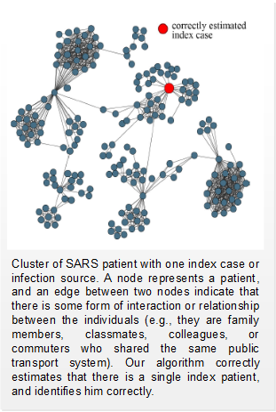
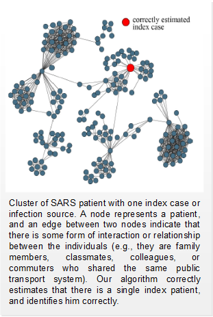
Selected Publications
| W. Tang, F. Ji, and W. P. Tay, “Estimating infection sources in networks using partial timestamps,” IEEE Transactions on Information Forensics and Security, vol. 13, no. 2, pp. 3035 – 3049, Dec. 2018. [pdf] [Bib] |
@ARTICLE{TanJiTay:J18,
author = {Wenchang Tang and Feng Ji and Wee Peng Tay},
title = {Estimating Infection Sources in Networks Using Partial Timestamps},
journal = {{IEEE} Trans. Inf. Forensics Security},
volume = {13},
number = {2},
pages = {3035 -- 3049},
month = {Dec.},
year = {2018},
}
|
| W. Luo, W. P. Tay, and M. Leng, "On the universality of Jordan centers for estimating infection sources in tree networks," IEEE Transactions on Information Theory, vol. 63, no. 7, pp. 4634 – 4657, Jul. 2017. Submitted Nov. 2014, accepted Feb. 2017. [pdf] [Bib] |
@ARTICLE{LuoTayLen:J17,
author = {Wuqiong Luo and Wee Peng Tay and Mei Leng},
title = {On the Universality of {Jordan} Centers for Estimating Infection Sources in Tree Networks},
journal = {{IEEE} Trans. Inf. Theory},
volume = {63},
number = {7},
pages = { 4634 – 4657},
month = {Jul.},
year = {2017},
}
|
| F. Ji, W. P. Tay, and L. Varshney, "An algorithmic framework for estimating rumor sources with different start times," IEEE Transactions on Signal Processing, vol. 65, no. 10, pp. 2517 - 2530, May 2017. [pdf] [Bib] |
@ARTICLE{JiTayVar:J17,
author = {Feng Ji and Wee Peng Tay and Lav Varshney},
title = {An Algorithmic Framework for Estimating Rumor Sources with Different Start Times},
journal = {{IEEE} Trans. Signal Process.},
volume = {65},
number = {10},
pages = {2517 -- 2530},
month = {May},
year = {2017},
}
|
| W. Luo, W. P. Tay, and M. Leng, "Infection spreading and source identification: A hide and seek game," IEEE Transactions on Signal Processing, vol. 64, no. 16, pp. 4338-4243, Aug. 2016. [pdf] [Bib] |
@ARTICLE{LuoTayLen:J16,
author = {Wuqiong Luo and Wee Peng Tay and Mei Leng},
title = {Infection spreading and source identification: A hide and seek game},
journal = {{IEEE} Trans. Signal Process.},
volume = {64},
number = {16},
pages = {4228 -- 4243},
month = {Aug.},
year = {2016},
}
|
| W. Luo, W. P. Tay, and M. Leng, “How to identify an infection source with limited observations,” IEEE Journal of Selected Topics in Signal Processing, vol. 8, no. 4, pp. 586–597, Aug. 2014. [pdf] [codes] [Bib] |
@ARTICLE{LuoTayLen:J14,
author = {Wuqiong Luo and Wee Peng Tay and Mei Leng},
title = {How to Identify an Infection Source with Limited Observations},
journal = {{IEEE} J. Sel. Topics Signal Process.},
volume = {8},
number = {4},
pages = {586 -- 597},
month = {Aug.},
year = {2014},
}
|
| W. Luo, W. P. Tay, and M. Leng, “Identifying infection sources and regions in large networks,” IEEE Transactions on Signal Processing, vol. 61, no. 11, pp. 2850–2865, Jun. 2013. [pdf] [codes] [Bib] |
@ARTICLE{LuoTayLen:J13,
author = {Wuqiong Luo and Wee Peng Tay and Mei Leng},
title = {Identifying infection sources and regions in large networks},
journal = {{IEEE} Trans. Signal Process.},
volume = {61},
number = {11},
pages = {2850 -- 2865},
month = {Jun.},
year = {2013},
}
|
Multi-Modal Target Localization
Efficiently localizing a network of devices has increasing importance for practical deployment of sensor networks in urban environments. We consider the problem of localization and tracking of all sensors and targets in a wireless sensor network using distributed and cooperative algorithms that allow the network of sensors to perform self-localization and target tracking robustly. We investigate various issues including the lack of synchronization amongst sensors and beacons, availability of only NLOS signals, and multipath effects.
- Efficiently localizing a network of devices has increasing importance for practical deployment of sensor networks in urban environments. We consider the problem of localization and tracking using multi-modal fusion that allows the network of sensors to perform self-localization and target tracking robustly. We investigate vehicle-to-vehicle (V2V) and vehicle-to-infrastructure (V2I) vehicular localization techniques. While GNSS devices can provide accurate location estimates in an open environment, an accurate GNSS fix occurs only if the device has line of sight to at least four GNSS satellites. In an urban environment with high rise buildings, ground vehicles typically do not have direct lines of sight to so many GNSS satellites; therefore GNSS localization becomes intermittent or even corrupted in some cases. We aim to investigate the use of cooperative localization methods that make use of V2X message passing techniques based on DSRC in order to perform vehicular localization under GNSS denied scenarios.

- We develop robust methods for self-localization of sensors in urban environments without the use of GNSS. We investigate the use of multiple beacons with known nominal locations, velocities and frequencies without assuming that clocks on beacons and sensors are synchronized. We investigate methods to mitigate errors and uncertainties in the beacons' locations, velocities and frequencies of transmission. We also develop a test-bed based on signals of opportunity from commercial satellite systems.

- Accurate localization with centimeter precision using data from multi-modal sensors, including camera images and lidar point clouds, is crucial for AV and challenging. In this project, we use deep learning techniques to perform automatic feature extraction and location estimation. We generate a calibration map off-line by extracting landmarks from the vehicle’s field of view, while the measurements, from which the location is estimated, are collected similarly on the fly.
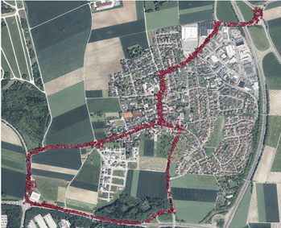
Selected Publications
| Y. Yan, I. Bajaj, R. Rabiee, and W. P. Tay, “A tightly coupled integration approach for cooperative positioning enhancement in DSRC vehicular networks,” IEEE Transactions on Intelligent Transportation Systems, in press. [pdf] [arXiv] [Bib] |
@ARTICLE{YanBajRab:J22,
author = {Yongsheng Yan and Ian Bajaj and Ramtin Rabiee and Wee Peng Tay},
title = {A Tightly Coupled Integration Approach for Cooperative Positioning Enhancement in {DSRC} Vehicular Networks},
journal = {IEEE Trans. Intell. Transp. Syst.},
volume = {23},
number = {12},
pages = {23278 -- 23294},
month = {Dec.},
year = {2022},
}
|
| F. Wen, H. Wymeersch, B. Peng, W. P. Tay, H. C. So and D. Yang, “A survey on 5G massive MIMO localization,” Digital Signal Processing, vol. 94, pp. 21 – 28, Nov. 2019. [pdf] [Bib] |
@ARTICLE{WenWymPen:J19,
author = {Fuxi Wen and Henk Wymeersch and Bile Peng and Wee Peng Tay and Hing Cheung So and Diange Yang},
title = {A Survey on {5G} Massive {MIMO} Localization},
journal = {Digital Signal Processing},
volume = {94},
number = {},
pages = {21 -- 28},
month = {Nov.},
year = {2019},
}
|
| R. Rabiee, X. Zhong, Y. Yan, and W. P. Tay, "LaIF: A lane-level self-positioning scheme for vehicles in GNSS-denied environments," IEEE Transactions on Intelligent Transportation Systems, vol. 20, no. 8, pp. 2944 – 2961, Aug. 2019. [pdf] [Bib] |
@ARTICLE{RabZhoYan:J18,
author = {Ramtin Rabiee and Xionghu Zhong and Yongsheng Yan and Wee Peng Tay},
title = {{LaIF}: {A} Lane-Level Self-Positioning Scheme for Vehicles in {GNSS}-Denied Environments},
journal = {{IEEE} Trans. Intell. Transp. Syst.},
volume = {20},
number = {8},
pages = {2944 -- 2961},
month = {Aug.},
year = {2019},
}
|
| F. Quitin, P. De Doncker, F. Horlin, and W. P. Tay, "Virtual multiantenna array for estimating the direction of a transmitter: system, bounds and experimental results," IEEE Transactions on Vehicular Technology, vol. 67, no. 2, pp. 1510 - 1520, Feb. 2018. [pdf] [Bib] |
@ARTICLE{QuiDeDHor:J18,
author = {Francois Quitin and Philippe {De Doncker} and Francois Horlin and Wee Peng Tay},
title = {Virtual multiantenna array for estimating the direction of a transmitter: system, bounds and experimental results},
journal = {{IEEE} Trans. Veh. Technol.},
volume = {67},
number = {2},
pages = {1510 -- 1520},
month = {Feb.},
year = {2018},
}
|
| M. Leng, W. P. Tay, F. Quitin, C. Cheng, S. G. Razul, and C. M. S. See, “Anchor-aided joint localization and synchronization using SOOP: Theory and experiments,” IEEE Transactions on Wireless Communications, vol. 15, no. 11, pp. 7670 – 7685, Nov. 2016. [pdf] [Bib] |
@ARTICLE{LenTayQui:J16,
author = {Mei Leng and Wee Peng Tay and Francois Quitin and Chi Cheng and Sirajudeen Gulam Razul and Chong Meng Samson See},
title = {Anchor-aided joint Localization and Synchronization Using {SOOP}: Theory and Experiments},
journal = {{IEEE} Trans. Wireless Commun.},
volume = {15},
number = {11},
pages = {7670 –- 7685},
month = {Nov.},
year = {2016},
}
|
| W. Xu, F. Quitin, M. Leng, W. P. Tay, and S. G. Razul, "Distributed localization of a RF target in NLOS environments," IEEE Journal on Selected Areas in Communications, vol. 33, no. 7, pp. 1 – 14, Jul. 2015. [pdf] [Bib] |
@ARTICLE{XuQuiLen:J15,
author = {Wenjie Xu and Francois Quitin and Mei Leng and Wee Peng Tay and Sirajudeen G. Razul},
title = {Distributed Localization of a {RF} target in {NLOS} Environments},
journal = {{IEEE} J. Sel. Areas Commun.},
volume = {33},
number = {7},
pages = {1 -- 14},
month = {Jul.},
year = {2015},
note = {in press},
}
|
| M. Leng, W. P. Tay, C. M. S. See, S. G. Razul, and M. Z. Win, “Modified CRLB for cooperative geolocation of two devices using signals of opportunity,” IEEE Transactions on Wireless Communications, vol. 13, no. 7, pp. 3636 – 3649, Jul. 2014. [pdf] [Bib] |
@ARTICLE{LenTaySee:J14,
author = {Mei Leng and Wee Peng Tay and C. M. S. See and S. Gulam Razul and Moe Z. Win},
title = {Modified CRLB for Cooperative Geolocation of Two Devices using Signals of Opportunity},
journal = {{IEEE} Trans. Wireless Commun.},
volume = {13},
number = {7},
pages = {3636 -- 3649},
month = {Jul.},
year = {2014},
}
|